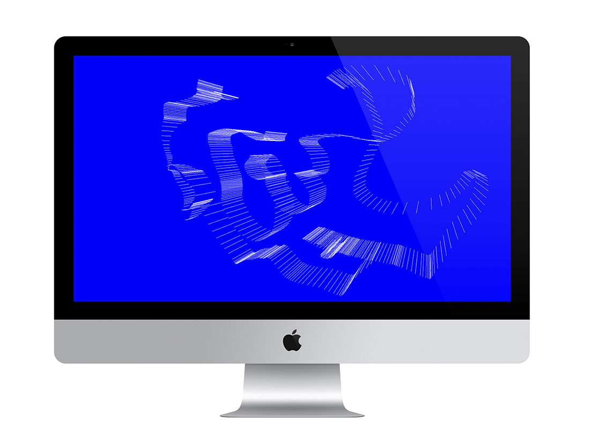

Web Design / Experiments
2015-2016
1. If I Ruled the World
2016.06.09
Design and development for internet publication entitled If I Ruled the World. If I Ruled the World is a publication that takes inspiration from the Nas classic, "If I Ruled The World" (It Was Written, 1996), in order to facilitate artistic collaborations and conversations between a range of Baltimore-based creatives and activists.
Full site here.

2. Prototype 3
2016.01.09
Prototype 3 was the start of an archive to contain a series experiments in Three.js, a javascript library for in browser 3d rendering
Full site here.
3. Mirror Box
2016.01.28
Mirror box is a digital gallery housing a body of work developed using Image Outliner, a Python script I had written in late 2015 / early 2016.
Full site here.
4. Misc. Drawing Tools
2016.03.09
Two drawing tools created using three.js by accessing mouseX and mouseY coordinates to render geometry in real time.
#1 can be found here, and #2 here.
